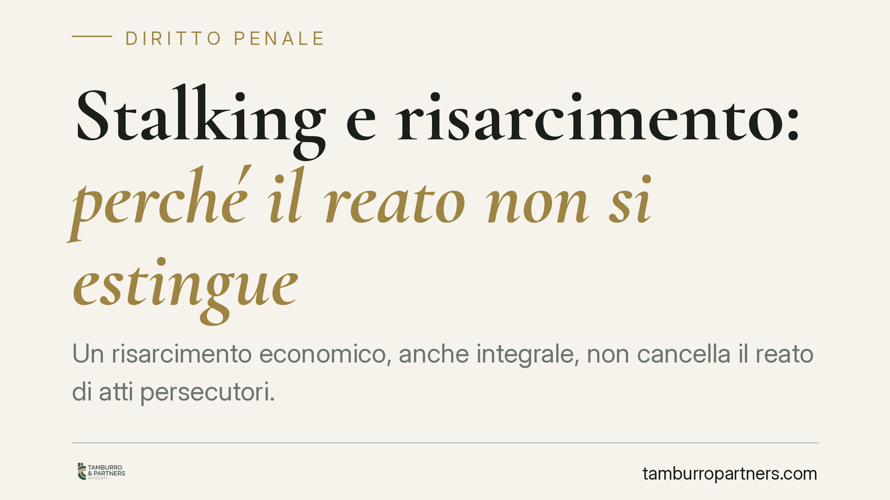

Stalking e risarcimento: perché il reato non si estingue
Un risarcimento economico, anche integrale, non cancella il reato di atti persecutori. La ragione è strutturale: l'estinzione per condotte riparatorie opera solo entro perimetri precisi, che lo stalking non integra. Il denaro può incidere sulla pena, non sull'esistenza del reato. Chiariamo la distinzione, spesso fraintesa nella pratica.

Il caso e il tema
Nella prassi ricorre una convinzione errata: che il risarcimento del danno alla persona offesa possa far "cadere" l'imputazione per atti persecutori (art. 612-bis c.p.). La domanda arriva spesso da chi è indagato e vorrebbe definire la posizione penale attraverso una somma di denaro.
La risposta è negativa, e non per una scelta discrezionale del giudice: dipende dalla struttura stessa degli istituti coinvolti.
> Nota redazionale (verifica prima della pubblicazione). La versione precedente citava una "sentenza Corte cost. n. 154/2026" e un "art. 162-ter, comma IV, c.p." che escluderebbe lo stalking. Entrambi i riferimenti risultano non verificabili o inesistenti: la sentenza ha data futura non confermabile, e l'art. 162-ter c.p. non contiene un comma IV che escluda l'art. 612-bis. Tali riferimenti sono stati rimossi. Se esiste una pronuncia costituzionale reale sul punto, va inserito il numero e l'anno effettivi prima di pubblicare.
Inquadramento normativo
L'estinzione del reato per condotte riparatorie è disciplinata dall'art. 162-ter c.p., introdotto dalla legge 23 giugno 2017, n. 103. L'istituto consente al giudice di dichiarare estinto il reato quando l'imputato ha riparato integralmente il danno, mediante risarcimento ed eventuali restituzioni, ed eliminato le conseguenze dannose o pericolose.
Il punto decisivo è l'ambito di applicazione: l'art. 162-ter c.p. opera solo per i reati procedibili a querela soggetta a remissione. È questo il limite che esclude lo stalking dal meccanismo.
La procedibilità degli atti persecutori è disciplinata direttamente dall'art. 612-bis c.p.: il delitto è punibile a querela della persona offesa, ma con termine più ampio e, soprattutto, la querela è irrevocabile in una serie di ipotesi (tra cui i casi aggravati e quelli commessi con determinate modalità). Dove la querela non è liberamente remissibile, l'art. 162-ter c.p. non trova spazio.
Su questa impostazione incide anche la cornice sovranazionale della Convenzione di Istanbul, ratificata con legge 27 giugno 2013, n. 77, che impone agli Stati una tutela rafforzata contro la violenza di genere e la vittimizzazione secondaria. Un'estinzione "a pagamento" del reato confliggerebbe con tale logica di protezione.
Implicazioni pratiche
Bisogna tenere distinti due piani che nella pratica vengono spesso confusi.
Piano dell'esistenza del reato. Il risarcimento, anche integrale e generoso, non estingue automaticamente l'imputazione per atti persecutori. Il processo prosegue, l'accertamento della responsabilità resta necessario e la condanna resta possibile.
Piano della pena. Qui il risarcimento conserva un peso reale. La riparazione del danno può rilevare ai fini:
- del riconoscimento delle attenuanti generiche (art. 62-bis c.p.);
- della circostanza attenuante del risarcimento del danno (art. 62, n. 6, c.p.);
- della commisurazione della pena ai sensi dell'art. 133 c.p.;
- della definizione del procedimento con riti alternativi, come patteggiamento o giudizio abbreviato.
In altri termini: il risarcimento non fa scomparire il reato, ma può influire in modo significativo sul trattamento sanzionatorio. È una differenza sostanziale, che cambia le aspettative realistiche di chi affronta un procedimento di questo tipo.
Cosa fare in concreto
- Verificare da subito il regime di procedibilità applicabile al caso concreto, distinguendo le ipotesi in cui la querela è remissibile da quelle in cui è irrevocabile.
- Non impostare la difesa sull'aspettativa di un'estinzione automatica del reato tramite risarcimento: è una strada preclusa per lo stalking.
- Valutare la riparazione del danno nella sua funzione effettiva, ossia come elemento incidente su attenuanti, commisurazione della pena e accesso ai riti alternativi.
- Documentare in modo rigoroso ogni condotta riparatoria, perché il giudice ne apprezza concretezza, tempestività e adeguatezza.
- Distinguere il piano risarcitorio civile da quello penale, che seguono presupposti e finalità diversi.
Conclusione
La linea di fondo è netta: nello stalking il denaro non compra l'estinzione del reato. Può però incidere sulla pena. Confondere i due piani genera aspettative sbagliate e scelte processuali inefficaci. La corretta impostazione, sin dalle prime fasi, dipende dall'analisi puntuale del regime di procedibilità e delle circostanze del singolo caso.
Ogni condominio ha una storia a sé.
Se gestisci un'amministrazione e vuoi un confronto su una specifica questione condominiale, scrivi allo studio. Ti rispondiamo entro un giorno lavorativo.